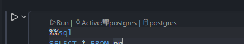
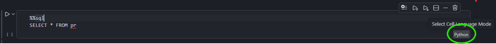
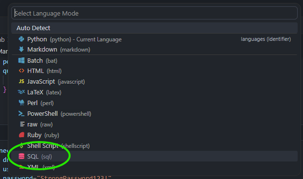
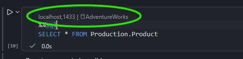
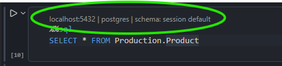
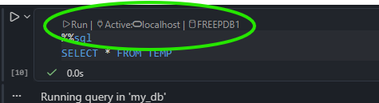
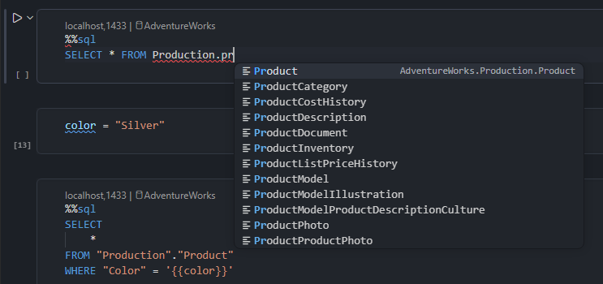

Motivation
As a Data Scientist I often work with SQL and Python. I wanted to find a way to blend work with both of these environments seamlessly. I wanted to avoid switching between tools, because I often need to query a database and transfer the result into Python for further processing. Here I present the setup I came up with for VS Code.
TL;DR
Connect to the database using one of the VS Code extensions
- SQL Server (mssql) extension
- PostgreSQL extension by Microsoft
- PostgreSQL extension by Database Client (supports other databases like Oracle, DuckDB etc.)
Install JupySQL
pip install jupysqlCreate SQLAlchemy engine and assign it to
enginevariableLoad JupySQL magics and connect using
engine%load_ext sql %sql engine --alias my_dbIn the cell you want to write SQL, change cell language to SQL (
Ctrl + K, Mby default)Make sure the cell is connected to the database (active connection is visible at the top of the SQL cell)

Put
%%sqlmagic at the top of the SQL cellWrite your SQL and enjoy SQL IntelliSense (context aware autocomplete), SQL formatting and work with Pandas DataFrames
???
Profit!
Requirements
VS Code (I used version 1.122.1)
Jupyter extension (and other dependencies like Python extensions etc.)
ODBC drivers for SQL Server - often preinstalled in the system
Python packages
pip install jupysql pandas ipykernel pyodbc
VS Code (I used version 1.122.1)
Jupyter extension (and other dependencies like Python extensions etc.)
PostgreSQL extension - this one is by Microsoft. PostgreSQL extension by Database Client also works.
Python packages
pip install jupysql pandas ipykernel "psycopg[binary]"
VS Code (I used version 1.122.1)
Jupyter extension (and other dependencies like Python extensions etc.)
PostgreSQL extension by Database Client (only 3 configured connections in free tier, but supports multiple database types)2
Python packages
pip install jupysql pandas ipykernel pip install oracledb # or other relevant database driver
Connect to the database
VS Code extension
Establish connection to the database in your VS Code extension
SQLAlchemy engine
Create SQLAlchemy engine
import getpass
import sqlalchemy as sa
import pyodbc
driver = [driver for driver in pyodbc.drivers() if "ODBC" in driver][0] # take available ODBC driver
connection_url = sa.engine.URL.create(
drivername="mssql+pyodbc", # dialect+driver
username="sa",
password=getpass.getpass(), # you can write password here in plain text or pass environment variable
host="localhost",
port="1433",
database="AdventureWorks",
query={ # different key: value pairs for each type of database
"driver": driver,
"Encrypted": "yes",
"TrustServerCertificate": "yes",
},
)
engine = sa.create_engine(connection_url)import getpass
import sqlalchemy as sa
connection_url = sa.engine.URL.create(
drivername="postgresql+psycopg", # dialect+driver
username="postgres",
password=getpass.getpass(), # you can write password here in plain text or pass environment variable
host="localhost",
port="5432",
database="postgres",
)
engine = sa.create_engine(connection_url)import getpass
import sqlalchemy as sa
connection_url = sa.engine.URL.create(
drivername="oracle+oracledb", # dialect+driver
username="my_user",
password=getpass.getpass(), # you can write password here in plain text or pass environment variable
host="localhost",
port="1521",
query={ # different key: value pairs for each type of database
"service_name": "FREEPDB1"
}
)
engine = sa.create_engine(connection_url)JupySQL
Load JupySQL magics and pass engine to establish connection (best use --alias here for future reference)
%load_ext sql
%sql engine --alias my_dbSQL cell
Change language of the cell to SQL either by:
- clicking in right bottom corner of the cell

- using command palette (by default
Ctrl+Shift+P) and choosingNotebook: Change Cell Language - using shortcut
Ctrl+K, M(by default)

Make sure that the cell is connected to the database by looking at the little text at the top left of the cell (you might need to click it select the connection and database)



Write SQL in the cell
Put %%sql magic at the top of the cell. You can now write SQL queries in the SQL cell and enjoy IntelliSense (context aware autocomplete) for SQL syntax and database objects as well as SQL formatting3.
I must admit the setup is kind of fragile. In case IntelliSense for database objects doesn’t work try one or all of these:
- using command palette (
Ctrl+Shift+P) selectMS SQL: Refresh IntelliSense Cache(or equivalent in other extension) - delete cell and create new one (change it’s language to SQL and connect it to database)
- restart VS Code
- (this one is weird) type your first SQL queries slowly, once it gets going you can type faster (maybe it has something to do with the fact that SQL IntelliSense in VS Code is kinda slow?)

Work with pandas
In order to pass the result of the query to Pandas DataFrame there is a two step process
Assign result to a variable e.g.
sql_resultmodyfying the%%sqlmagic%%sql sql_result << SELECT * FROM Production.ProductIn next Python cell extract it to DataFrame
df_result = sql_result.DataFrame()
Alternatively, you can setup Pandas output globally (this allows to skip second step):
%config SqlMagic.autopandas = TrueTo save an existing DataFrame df to database you can use flag --persist or --persist-replace (table will have the same name as the DataFrame variable, schema is simply schema in the database)
%sql --persist schema.df
%sql --persist-replace schema.df Close connection
To close connection use --close flag with connection alias
%sql --close my_dbOther features
There are a lot of other features in JupySQL like
- parametric queries using Jinja
- working with multiple connections
- query
.csvand Excel files - plotting results of the queries
and much more. Everything is cleanly explained in the JupySQL documentation
Footnotes
Recently SQL notebooks were added to the SQL Server (mssql) extension. They are for SQL only - you cannot work with Python AND SQL in the same notebook. Be careful not to change kernel to MSSQL - it overrides notebook metadata. When you try to go back to Python kernel ALL code cells will have language changed to SQL without easy option to go back - you need to open the notebook with text editor and delete
"metadata": {"vscode": {"languageId": "sql"}}from each cell.↩︎Although there is official Oracle extension it doesn’t integrate with Jupyter notebooks nicely since it introduces new language PL/SQL which is not available for Jupyter notebook cells.↩︎
Depending on your formatting options it might not like
%%sqlmagic as it is not part of standard SQL syntax - you can simply put it at the top of the cell just before execution.↩︎
Reuse
Citation
@online{patucha2026,
author = {Patucha, Konrad},
title = {SQL in {Jupyter} {Notebook} {(JupySQL} + {VS} {Code} +
{Jupyter} {Notebook)}},
date = {2026-06-08},
url = {https://kpatucha.github.io/posts/JupySQL/},
langid = {en}
}